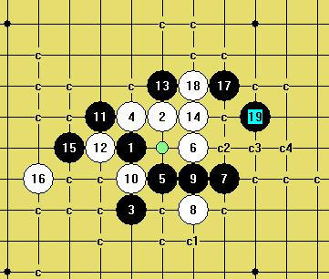

明星的馅饼制作过程
#1 <font color="red">明星的馅饼制作过程</font> 作者：小点心 发表时间：2009-6-15 16:48:14
=======上图对应的爱五子棋谱代码如下，以便你拆解：========
h8i9h6h9i7j8k7j6j7h7g9g8i10j9l9k10i8i6f9f8e8f10d7c6e6
======================================================
［ 茗弈小刀 于 2009-6-15 17:07:59 时花20金币送鲜花一朵］
#2 Re:明星的20 作者：小点心 发表时间：2009-6-15 16:48:58
=======上图对应的爱五子棋谱代码如下，以便你拆解：========
h8i9h6h9i7j8k7j6j7h7g9g8i10j9l9k10i8i6f9f8e8f10d7g10d10
======================================================
#3 Re:明星的20 作者：小点心 发表时间：2009-6-15 16:49:38
=======上图对应的爱五子棋谱代码如下，以便你拆解：========
h8i9h6h9i7j8k7j6j7h7g9g8i10j9l9k10i8i6f9f8e8g10d9e9c10b11d7
======================================================
#4 Re:明星的20 作者：小点心 发表时间：2009-6-15 16:50:44
=======上图对应的爱五子棋谱代码如下，以便你拆解：========
h8i9h6h9i7j8k7j6j7h7g9g8i10j9l9k10i8i6f9f8e8d7
======================================================
没有找到满意的23.请教。
#5 Re:明星的20 作者：茗弈小刀 发表时间：2009-6-15 17:09:43
ShowPost.asp?ThreadID=7525据说明星地毯了。#6 Re:明星的20 作者：茗弈小刀 发表时间：2009-6-15 17:20:01
=======上图对应的爱五子棋谱代码如下，以便你拆解：========
h8i9h6h9i7j8k7j6j7h7g9g8i10j9l9k10i8i6f9f8e8d7k5
======================================================
23在8下边也可以吧把.另外21是否最强手段呢?感觉这个其要把左下和左边联系起来.
#7 Re:明星的20 作者：失落刀 发表时间：2009-6-15 23:42:12
4楼的问题不会。帮不了忙。
#8 Re:明星的20 作者：wrwak 发表时间：2009-6-16 13:08:54
=======上图对应的爱五子棋谱代码如下，以便你拆解：========
h8i9h6h9i7j8k7j6j7h7g9g8i10j9l9k10g6
======================================================
黑必胜了
#9 Re:明星的20 作者：游戏人间 发表时间：2009-6-16 13:33:26
=======上图对应的爱五子棋谱代码如下，以便你拆解：========
h8i9h6h9i7j8k7j6j7h7g9g8i10j9l9k10g6k12
======================================================
#10 Re:明星的20 作者：茗弈小刀 发表时间：2009-6-16 15:42:20
 呼叫明灯---尤达老师！！！
呼叫明灯---尤达老师！！！
#11 Re:明星的馅饼制作过程 作者：失落刀 发表时间：2009-6-16 18:38:37
 分支.rar
分支.rar
［ 茗弈小刀 于 2009-6-16 19:45:39 时花20金币送鲜花一朵］
#12 Re:明星的馅饼制作过程 作者：无尽 发表时间：2009-6-16 18:46:29
8楼在说反话吧。
#13 Re:明星的馅饼制作过程 作者：五子痴 发表时间：2009-6-16 18:54:34
=======上图对应的爱五子棋谱代码如下，以便你拆解：========
h8i9h6h9i7j8k7j6j7h7g9g8i10j9l9k10i8i6f9f8e8d7i12e11j12i13h11g10k12l12j13
======================================================
这个23很强
［ 茗弈小刀 于 2009-6-16 19:45:55 时花20金币送鲜花一朵］
#14 Re:明星的馅饼制作过程 作者：不知 发表时间：2009-6-16 19:02:43
 走了一圈..捡到个小饼干
走了一圈..捡到个小饼干
#15 Re:明星的馅饼制作过程 作者：茗弈小刀 发表时间：2009-6-16 19:44:31
我伟大的哥哥---扫地僧终于闪亮登场！#16 Re:明星的馅饼制作过程 作者：wrwak 发表时间：2009-6-17 8:14:46
=======上图对应的爱五子棋谱代码如下，以便你拆解：========
h8i9h6h9i7j8k7j6j7h7g9g8i10j9l9k10i8i6f9f8e8d7i12h11j12
======================================================
解决所有24啊
#17 Re:Re:明星的馅饼制作过程 作者：sonix 发表时间：2009-6-17 9:32:22
=======上图对应的爱五子棋谱代码如下，以便你拆解：========
h8i9h6h9i7j8k7j6j7h7g9g8i10j9l9k10i8i6f9f8e8d7i12h11j12i13
======================================================
#18 Re:明星的馅饼制作过程 作者：茗弈小刀 发表时间：2009-6-17 10:06:21
我觉得五子痴这个23的思路不错，应该都能杀。我们大家先拆拆吧。#19 Re:明星的馅饼制作过程 作者：失落刀 发表时间：2009-6-17 15:45:47
24只有两个，之一。
#20 Re:明星的馅饼制作过程 作者：失落刀 发表时间：2009-6-17 15:46:15
24只有两个，之二。
#21 Re:明星的馅饼制作过程 作者：失落刀 发表时间：2009-6-17 15:53:47
=======上图对应的爱五子棋谱代码如下，以便你拆解：========
h8i9h6h9i7j8k7j6j7h7g9g8i10j9f8
======================================================
上面的两个24整不动的话，换西毒的15吧？
#22 Re:明星的馅饼制作过程 作者：小天元子 发表时间：2009-6-17 22:05:12
88978a8799a8b9aaa989777896a76898b686b8b7c7d6abba9b
=======上图对应的爱五子棋谱代码如下，以便你拆解：========
h8i9h6h9i7j8k7j6j7h7g9g8i10j9f8i8k10h10k8k9l9m10j5k6i5
======================================================
#23 Re:明星的馅饼制作过程 作者：小天元子 发表时间：2009-6-17 22:05:45
88978a8799a8b9aaa989777896a76898b686b8b7c7d6abbaa5d8d9c979
=======上图对应的爱五子棋谱代码如下，以便你拆解：========
h8i9h6h9i7j8k7j6j7h7g9g8i10j9f8i8k10h10k8k9l9m10j5k6j11m8m7l7g7
======================================================
#24 Re:明星的馅饼制作过程 作者：小天元子 发表时间：2009-6-17 22:07:03
88978a8799a8b9aaa989777896a76898b69579579bacb8ba6655c7d6c6
=======上图对应的爱五子棋谱代码如下，以便你拆解：========
h8i9h6h9i7j8k7j6j7h7g9g8i10j9f8i8k10i11g7e9i5j4k8k6f10e11l9m10l10
======================================================
［ 茗弈小刀 于 2009-6-17 22:21:19 时花20金币送鲜花一朵］
#25 Re:明星的馅饼制作过程 作者：小天元子 发表时间：2009-6-17 22:09:21
“If you cannot come up with anything good, then just play safely to L9 or k10. Move f8 looks risky but interesting.”
机器翻译：如果您不可能产生好任何东西，请安全地然后播放对L9或k10。 移动f8危险的看起来，但是有趣的.”
智能翻译：“如果接下来你没有什么好的应对点子，那么走L9或K10妥当点，走F8看起来冒险但是棋局会变的很有趣。”
L9或K10防守反击，F8对攻。。。
#26 Re:明星的馅饼制作过程 作者：茗弈小刀 发表时间：2009-6-17 22:20:58
=======上图对应的爱五子棋谱代码如下，以便你拆解：========
h8i9h6h9i7j8k7j6j7h7g9g8i10j9f8h10
======================================================
这个16比较头疼。
#27 Re:明星的馅饼制作过程 作者：家族粉丝 发表时间：2009-6-17 22:23:42
26楼的16目前看法是唯一。#28 Re:明星的馅饼制作过程 作者：小天元子 发表时间：2009-6-17 22:23:43
“如果接下来你没有什么好的应对点子，那么走L9或K10妥当点，走F8看起来冒险但是棋局会变的很有趣。”
L9或K10防守反击，F8对攻。。。
#29 Re:明星的馅饼制作过程 作者：茗弈小刀 发表时间：2009-6-17 22:30:47
F8不是15手占着了吗？F7吧？我是下的I6,也不太好杀。#30 Re:明星的馅饼制作过程 作者：茗弈南极的绿洲 发表时间：2009-6-18 0:50:31
好佩服呀呀呀
#31 Re:明星的馅饼制作过程 作者：小天元子 发表时间：2009-6-18 12:39:27
=======上图对应的爱五子棋谱代码如下，以便你拆解：========
h8i9h6h9i7j8k7j6j7h7g9g8i10j9f8f10
======================================================
拆了下，唯一防了
#32 Re:明星的馅饼制作过程 作者：失落刀 发表时间：2009-6-18 12:41:10
31楼的，16走4上面才是惟一防了吧？
#33 Re:明星的馅饼制作过程 作者：没事摆石子玩 发表时间：2009-6-18 12:43:38
16在4上边怎么杀？麻烦31楼朋友给条线路，谢了。#34 Re:明星的馅饼制作过程 作者：小天元子 发表时间：2009-6-18 15:20:45
88978a8799a8b9aaa989777896a768869a9b7a8b595a69
=======上图对应的爱五子棋谱代码如下，以便你拆解：========
h8i9h6h9i7j8k7j6j7h7g9g8i10j9f8h10i6i5g6h5e7e6f7
======================================================
#35 Re:明星的馅饼制作过程 作者：小天元子 发表时间：2009-6-18 15:21:27
=======上图对应的爱五子棋谱代码如下，以便你拆解：========
h8i9h6h9i7j8k7j6j7h7g9g8i10j9f8h10i6i5g6h5e7f6d7
======================================================
#36 Re:明星的馅饼制作过程 作者：家族粉丝 发表时间：2009-6-18 15:32:35
18走35楼的20位置，如何杀？请教！#37 Re:明星的馅饼制作过程 作者：小天元子 发表时间：2009-6-18 16:42:21
=======上图对应的爱五子棋谱代码如下，以便你拆解：========
h8i9h6h9i7j8k7j6j7h7g9g8i10j9f8h10i6h5l9i5k10m10m8n7l7m7l8l6k11
======================================================
#38 Re:Re:明星的馅饼制作过程 作者：小天元子 发表时间：2009-6-18 17:46:46
#39 Re:明星的馅饼制作过程 作者：忧郁的双眼 发表时间：2009-6-18 18:47:19
楼上的图很吸引#40 Re:明星的馅饼制作过程 作者：不知 发表时间：2009-6-18 18:48:56
此图何时以饼的形式出现?
#41 Re:明星的馅饼制作过程 作者：wrwak 发表时间：2009-6-18 18:49:07
期待发饼中，楼上上上强悍，随便就搞定了，
#42 Re:明星的馅饼制作过程 作者：wrwak 发表时间：2009-6-18 18:52:30
今天期待金星和明星的大饼#43 Re:明星的馅饼制作过程 作者：无心永恒 发表时间：2009-6-18 18:57:08
金星的很容易啊，我做的只用了4M，但是校验的时候把标记弄没了...郁闷死
#44 Re:明星的馅饼制作过程 作者：wrwak 发表时间：2009-6-18 19:12:38
金星不难但是地毯才能卖钱的 ，这是唯一区别
，这是唯一区别
#45 Re:明星的馅饼制作过程 作者：越狱行辕 发表时间：2009-6-18 20:07:39
郁闷了 馅饼内#46 Re:明星的馅饼制作过程 作者：吐血刀 发表时间：2009-6-18 20:26:46
=======上图对应的爱五子棋谱代码如下，以便你拆解：========
h8i9h6h9i7j8k7j6j7h7g9g8i10j9f8h10i6k10
======================================================
18之4-1
#47 Re:明星的馅饼制作过程 作者：吐血刀 发表时间：2009-6-18 20:27:51
=======上图对应的爱五子棋谱代码如下，以便你拆解：========
h8i9h6h9i7j8k7j6j7h7g9g8i10j9f8h10i6i8
======================================================
18之4-2
#48 Re:明星的馅饼制作过程 作者：吐血刀 发表时间：2009-6-18 20:29:11
=======上图对应的爱五子棋谱代码如下，以便你拆解：========
h8i9h6h9i7j8k7j6j7h7g9g8i10j9f8h10i6g6
======================================================
18之4-3
#49 Re:明星的馅饼制作过程 作者：吐血刀 发表时间：2009-6-18 20:30:15
=======上图对应的爱五子棋谱代码如下，以便你拆解：========
h8i9h6h9i7j8k7j6j7h7g9g8i10j9f8h10i6h5
======================================================
18之4-4
#50 Re:明星的馅饼制作过程 作者：茗弈如梦 发表时间：2009-6-19 8:36:45
35楼太强大了,,,,,,,#51 Re:明星的馅饼制作过程 作者：wsmwy 发表时间：2009-6-20 12:22:45
后边的交换太麻烦了，懒做得
#52 Re:明星的馅饼制作过程 作者：没定式随便下 发表时间：2009-6-20 21:26:17
小天元子发几个c1,c2,c3的强的路线出来看看怎么样？
#53 Re:明星的馅饼制作过程 作者：wrwak 发表时间：2009-6-20 21:43:05
直接叫她发棋谱吧。#54 Re:明星的馅饼制作过程 作者：nara 发表时间：2009-6-20 23:23:58
c1,c2,c3应该不算难的点吧，真正难的点应该在c败中
#55 Re:明星的馅饼制作过程 作者：没定式随便下 发表时间：2009-6-20 23:25:22
呵呵，我看错了，我的意思是16手在4上面，然后18在c1,c2,c3的强防。#56 Re:Re:明星的馅饼制作过程 作者：游戏人间 发表时间：2009-6-21 18:02:25
引用：没错。。。这个在C败里有个大BUG很烦的~~~不知道小天元子怎么解决的~呵呵
原文由 nara 发表于 2009-6-20 23:23:58 :
c1,c2,c3应该不算难的点吧，真正难的点应该在c败中
#57 Re:明星的馅饼制作过程 作者：侯军学棋 发表时间：2009-6-21 20:52:01
大师发饼子juice知道了
#58 Re:明星的馅饼制作过程 作者：一千次回眸 发表时间：2009-6-23 14:33:04
偶来发一个图8
=======上图对应的爱五子棋谱代码如下，以便你拆解：========
h8i9h6h9i7j8k7j6j7h7g9g8i10f10l7m7k8
======================================================
#59 Re:明星的馅饼制作过程 作者：一千次回眸 发表时间：2009-6-23 14:34:33
=======上图对应的爱五子棋谱代码如下，以便你拆解：========
h8i9h6h9i7j8k7j6j7h7g9g8i10j9f8f9e10
======================================================
#60 Re:明星的馅饼制作过程 作者：侯军学棋 发表时间：2009-6-24 11:26:31
饼子还没制作好#61 Re:Re:明星的馅饼制作过程 作者：小天元子 发表时间：2009-6-26 9:50:06

#62 Re:明星的馅饼制作过程 作者：小点心 发表时间：2009-6-26 10:21:18
=======上图对应的爱五子棋谱代码如下，以便你拆解：========
h8i9h6h9i7j8k7j6j7h7g9g8i10j9f8h10i6h5l9
======================================================
请教各位高手，这个19可以地毯吗？
#63 Re:明星的馅饼制作过程 作者：月月鸟 发表时间：2009-6-26 13:35:11
听朋友说流逝大师的杀法。
#64 Re:明星的馅饼制作过程 作者：忧郁的双眼 发表时间：2009-6-28 0:04:06
楼上只不过是流逝四个必胜15中的一个
#65 Re:明星的馅饼制作过程 作者：四川连珠魂 发表时间：2009-6-28 17:16:48
流逝4个15必胜。。。。
#66 Re:明星的馅饼制作过程 作者：wrwak 发表时间：2009-6-28 21:19:07
哎 信错刀魂了，应该信流逝的！#67 Re:明星的馅饼制作过程 作者：松风竹影 发表时间：2009-6-28 21:24:55
WR这话真有水平
#68 Re:明星的馅饼制作过程 作者：松风竹影 发表时间：2009-6-28 21:25:51
我就信wrwak#69 Re:明星的馅饼制作过程 作者：松风竹影 发表时间：2009-6-28 21:37:11
=======上图对应的爱五子棋谱代码如下，以便你拆解：========
h8i9h6h9i7j8k7j6j7h7g9g8i10j9f8h10i6g6
======================================================给个杀法,

#70 Re:Re:明星的馅饼制作过程 作者：极地剑客 发表时间：2009-6-29 6:10:35
引用：臂上能走马~拳上能站人~胸口碎大石~小意思啦~~信流逝者~得永生~
原文由 忧郁的双眼 发表于 2009-6-28 0:04:06 :楼上只不过是流逝四个必胜15中的一个
#71 Re:明星的馅饼制作过程 作者：火光冲天 发表时间：2009-6-29 20:44:51
=======上图对应的爱五子棋谱代码如下，以便你拆解：========
h8i9h6h9i7j8k7j6j7h7g9g8i10j9f8k10
======================================================
请教这个16的杀法
#72 Re:明星的馅饼制作过程 作者：茗弈小刀 发表时间：2009-6-29 22:08:13
还杀不了呢。参考无敌天下ShowPost.asp?ThreadID=7768
#73 Re:明星的馅饼制作过程 作者：失落刀 发表时间：2009-7-12 21:49:08
=======上图对应的爱五子棋谱代码如下，以便你拆解：========
h8i9h6h9i7j8k7j6j7h7g9g8i10j9f8h10i5g7j5
======================================================
有个朋友在拆这个方向。
#74 Re:明星的馅饼制作过程 作者：胡燕军 发表时间：2009-8-23 10:41:29
=======上图对应的爱五子棋谱代码如下，以便你拆解：========
h8i9h6h9i7j8k7j6j7h7g9g8i10j9f8h10
======================================================这个16那位大师`可以杀杀
#75 Re:明星的馅饼制作过程 作者：五子痴 发表时间：2009-8-23 11:52:54
=======上图对应的爱五子棋谱代码如下，以便你拆解：========
h8i9h6h9i7j8k7j6j7h7g9g8i10j9f8h10i6
======================================================
要是我会先用这个17控制一下 做承上启下作用 白难应 之后再造杀 也是一种选择
#76 Re:明星的馅饼制作过程 作者：砍 发表时间：2009-8-23 17:33:35
=======上图对应的爱五子棋谱代码如下，以便你拆解：========
h8i9h6h9i7j8k7j6j7h7g9g8i10j9f8k10i8e7k6i5
======================================================这个20怎么杀啊
#77 Re:明星的馅饼制作过程 作者：砍 发表时间：2009-8-23 17:34:35
=======上图对应的爱五子棋谱代码如下，以便你拆解：========
h8i9h6h9i7j8k7j6j7h7g9g8i10j9f8k10i8e7i5g7
======================================================或者这个20怎么杀
#78 Re:明星的馅饼制作过程 作者：胡燕军 发表时间：2009-8-24 20:48:54
19下I5`20防G7。老师说可以杀
#79 Re:明星的馅饼制作过程 作者：胡燕军 发表时间：2009-8-24 20:53:41
正在做饼中```
有饼子的发出来 ```大家一起分享 ``分享``` 
#80 Re:明星的馅饼制作过程 作者：砍 发表时间：2009-8-25 10:07:56
怎么必的啊？告诉我21下在哪里啊#81 Re:明星的馅饼制作过程 作者：胡燕军 发表时间：2009-8-25 20:55:48
明2终于地毯````哈哈 要不要发到这网站上
#82 Re:明星的馅饼制作过程 作者：方圆之外 发表时间：2009-8-26 13:43:30
 做好的赶紧拿出来。。大家分享``
做好的赶紧拿出来。。大家分享``
#83 Re:明星的馅饼制作过程 作者：左伟光 发表时间：2009-8-30 17:53:29
谁地毯了分享下呗#84 Re:Re:明星的馅饼制作过程 作者：茗弈小刀 发表时间：2009-9-20 20:32:37
引用：谁发了这个谱奖励威望5个!
原文由 胡燕军 发表于 2009-8-25 20:55:48 :明2终于地毯````哈哈 要不要发到这网站上
#85 Re:明星的馅饼制作过程 作者：lfc 发表时间：2009-9-21 12:35:32
太少了，给50个还差不多#86 Re:明星的馅饼制作过程 作者：砍 发表时间：2009-10-6 11:35:51
=======上图对应的爱五子棋谱代码如下，以便你拆解：========
h8i9h6h9i7j8k7j6j7h7g9g8i10j9f8h10i6k10
======================================================
=======上图对应的爱五子棋谱代码如下，以便你拆解：========
h8i9h6h9i7j8k7j6j7h7g9g8i10j9f8h10i6i8
======================================================
这3个18地毯谱谁能发一下啊
=======上图对应的爱五子棋谱代码如下，以便你拆解：========
h8h9h6i9i7j8k7j6j7h7g9g8i10j9f8h10i6g6
======================================================
#87 Re:明星的馅饼制作过程 作者：賢周 发表时间：2009-10-9 6:37:02
=======上图对应的爱五子棋谱代码如下，以便你拆解：========
h8i9h6h9i7j8k7j6j7h7g9g8i10j9f8k10i8e7
======================================================
#88 Re:明星的馅饼制作过程 作者：潇洒 发表时间：2009-10-14 12:03:30
87楼貌似挺难解决的#89 Re:明星的馅饼制作过程 作者：茗弈宽容 发表时间：2009-10-14 12:19:08
86楼的16是最难的.还没找到杀的方法.#90 Re:Re:Re:明星的馅饼制作过程 作者：白衣神童小剑魔 发表时间：2009-10-14 14:01:00
81楼是要先给5个威望才能发谱
他威望才1哦
呵呵
#91 Re:明星的馅饼制作过程 作者：五子痴 发表时间：2009-10-19 22:31:28
=======上图对应的爱五子棋谱代码如下，以便你拆解：========
h8i9h6h9i7j8k7j6j7h7g9g8i10j9f8k10i8e7i5j4g5h5f10e11f7f6e9g7g11
======================================================
=======上图对应的爱五子棋谱代码如下，以便你拆解：========
h8i9h6h9i7j8k7j6j7h7g9g8i10j9f8k10i8e7i5j4g5i6f10e11f9f11e9g7g10
======================================================
87楼大汉的18 看看这样能杀不 两个强22
=======上图对应的爱五子棋谱代码如下，以便你拆解：========
h8i9h6h9i7j8k7j6j7h7g9g8i10j9f8k10i8e7i5g7d7
======================================================
如上图 至于20堵中间推荐这个21看能杀不
#92 Re:明星的馅饼制作过程 作者：逆刃 发表时间：2009-10-19 22:38:47
87楼的看能不能这样杀，VCT杀。
=======上图对应的爱五子棋谱代码如下，以便你拆解：========
h8i9h6h9i7j8k7j6j7h7g9g8i10j9f8k10i8e7e9g7f10e11g10h10g11d8f9
======================================================
=======上图对应的爱五子棋谱代码如下，以便你拆解：========
h8i9h6h9i7j8k7j6j7h7g9g8i10j9f8k10i8e7e9g7f10e11g10h10g11h12f9
======================================================
［ 五子痴 于 2009-10-19 23:06:24 时花20金币送鲜花一朵］
［ 潇洒 于 2009-10-19 23:08:38 时花20金币送鲜花一朵］
#93 Re:明星的馅饼制作过程 作者：五子痴 发表时间：2009-10-19 23:06:10
可怜的大汉
#94 Re:Re:明星的馅饼制作过程 作者：米 发表时间：2009-10-20 6:12:59
=======上图对应的爱五子棋谱代码如下，以便你拆解：========
h8i9h6h9i7j8k7j6j7h7g9g8i10j9f8k10i8e7e9d10f7f10g5i5g6
======================================================
87楼的18必败，92楼杀法没问题，如图补充说明一下20挡上边的杀法。
［ 失落刀 于 2009-11-1 17:43:19 时花20金币送鲜花一朵］
#95 Re:明星的馅饼制作过程 作者：砍 发表时间：2009-11-28 19:51:42
=======上图对应的爱五子棋谱代码如下，以便你拆解：========
h8i9h6h9i7j8k7j6j7h7g9g8i10j9f8h10i6k10i8i5l9h5e5
======================================================这个23可以地毯这个22么？
#96 Re:明星的馅饼制作过程 作者：小帮帮 发表时间：2009-12-13 20:24:34
=======上图对应的爱五子棋谱代码如下，以便你拆解：========
h8g9h6h9g7f8e7f6f7h7i9i8g10f9j8e10g8d9e9f11
======================================================
=======上图对应的爱五子棋谱代码如下，以便你拆解：========
h8g9h6h9g7f8e7f6f7h7i9i8g10f9j8e10g8h10
弱弱地问一下，这两个呢?
======================================================
#97 Re:Re:明星的馅饼制作过程 作者：一心弈路 发表时间：2010-2-1 10:12:25
=======上图对应的爱五子棋谱代码如下，以便你拆解：========
h8i9h6h9i7j8k7j6j7h7g9
======================================================
防止沉帖，有结论有饼的发啊
#98 Re:明星的馅饼制作过程 作者：砍 发表时间：2010-2-13 20:21:24
=======上图对应的爱五子棋谱代码如下，以便你拆解：========
h8i9h6h9i7j8k7j6j7h7g9g8i10j9f8h10i6i8k10h5
======================================================怎么杀
#99 Re:明星的馅饼制作过程 作者：砍 发表时间：2010-2-14 22:58:14
=======上图对应的爱五子棋谱代码如下，以便你拆解：========
h8i9h6h9i7j8k7j6j7h7g9g8i10j9f8h10i6g6
======================================================最后的一个18，哈哈哈看看怎么杀
#100 Re:明星的馅饼制作过程 作者：小静水终结 发表时间：2010-4-18 17:31:25
=======上图对应的爱五子棋谱代码如下，以便你拆解：========
h8h9h6i9i7j8k7j6j7h7g9g8i10j9l9i6
======================================================这个强点怎么杀啊？
#101 Re:明星的馅饼制作过程 作者：故乡 发表时间：2010-6-9 10:39:16
#102 Re:Re:明星的馅饼制作过程 作者：茗弈小刀 发表时间：2010-6-9 12:01:11
引用：17挡上边
原文由 小静水终结 发表于 2010-4-18 17:31:25 :
=======上图对应的爱五子棋谱代码如下，以便你拆解：========
h8h9h6i9i7j8k7j6j7h7g9g8i10j9l9i6
======================================================这个强点怎么杀啊？
#103 Re:明星的馅饼制作过程 作者：uniwin 发表时间：2010-6-10 9:25:29
这个问题，在yoda老师的博客里有过介绍，详见
http://hi.baidu.com/lihongbin/blog/item/663f6d8d78f4ab15b31bbaac.html


［此帖子已被 uniwin 在 2010-6-10 9:27:37 编辑过］
#104 Re:明星的馅饼制作过程 作者：小帮帮 发表时间：2010-6-10 20:57:50
历史最完美明星地毯已完成！我代表所有棋谱研究及制作者向小甜甜致敬！
#105 Re:明星的馅饼制作过程 作者：失落刀 发表时间：2010-6-10 21:04:21
感谢你代表俺